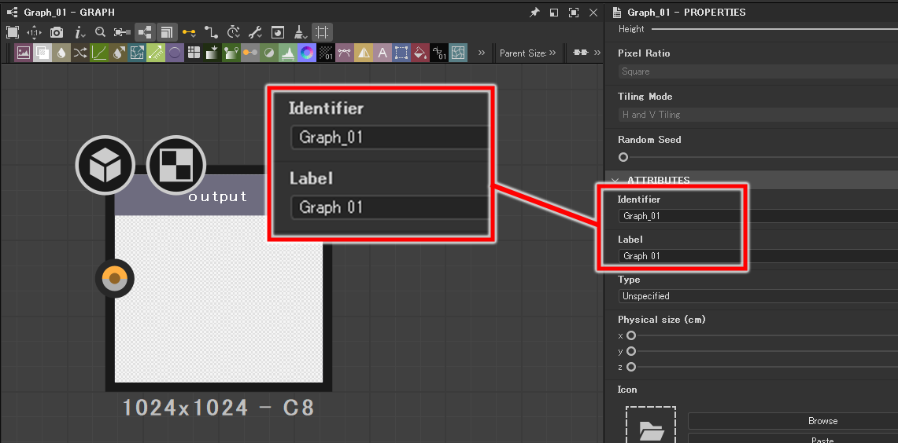
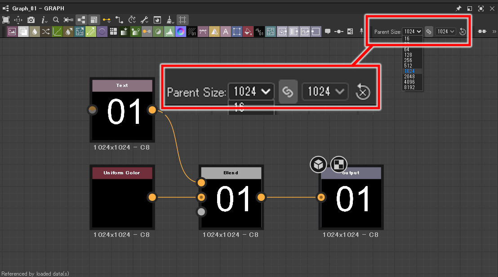

SubstanceDesigner
Substance Designer クイックスタートガイド
第3回：グラフ
2024/02/06
前回 は、SubstanceDesignerの主要な機能であるノードについて解説しました。
今回は、グラフについて少し掘り下げて解説していきます。
インターフェース
まず、インターフェースの概要について整理しておきます。
SubstanceDesignerには、以下のようなインターフェースがあります。
- エクスプローラーパネル : パッケージやグラフ、リソースを管理することができます。
- ライブラリパネル : デフォルトのコンテンツを検索、グラフに配置できます。
- グラフビュー : グラフを編集するビューポート。
- プロパティパネル : 選択されている要素のプロパティを参照、編集できます。
- 3Dビュー : PBRマテリアルの見た目を表示するビューポート。
- 2Dビュー : 選択されているノードのテクスチャを表示するビューポート。
グラフの基本
グラフビューでグラフの中身を編集するには、エクスプローラーパネルでグラフをダブルクリックします。
グラフのプロパティ
グラフのプロパティを表示するには、エクスプローラーパネルでグラフをクリックするか、グラフビューの何もないところをダブルクリックします。
グラフには様々なプロパティがありますが、今回はその中でも主要なグラフのプロパティについて解説します。
Identifier

sbsファイル内でグラフを識別するためのIDです。
この項目を編集すると、エクスプローラービューでのグラフの表示名も更新されます。
IDには、使用できない記号もあるため注意してください。
半角スペースも使用できないため、自動で _ (アンダースコア) に変換されます。
Label
グラフは、グラフ自身がノードとして別のグラフに配置することができますが、Label は配置された際にノード名として使用される名前です。
ラベルには半角スペースを使用することができます。
Outputs
Outputsの項目には、グラフに配置されているアウトプットノードのプロパティが表示されます。
Label の項目で設定した名前が、グラフビュー上でのアウトプットノードの名前になります。
Usage の項目では、そのアウトプットノードが、マテリアルとして書き出した際にどのチャンネルとして使用されるかを指定することができます。
上の例では、アウトプットノードがbaseColorチャンネルとして使用されることが確認できます。
ペアレントサイズ
ペアレントサイズとは、グラフのテクスチャ解像度のことです。

グラフビュー右上の Parent Size のドロップダウンから変更することができます。
高すぎる解像度はパフォーマンスに影響を及ぼす可能性があるので、処理が重いと感じたら、作業中はペアレントサイズを落とすことを検討すると良いでしょう。
ちなみに、ノードベースで生成されたノイズなどのテクスチャは、ペアレントサイズを変更しても画像が劣化することはありません。
Relative to Parent
ノードには、あらゆるノード共通の Base Parameters というパラメータがあります。
その中の Output Size は、ノードの解像度を指定するパラメータです。
あらゆるパラメータは、右上のアイコンから パラメータの 継承モード を指定することができます。
継承モードが Relative to Parent の場合は、グラフの設定に対して 相対的な 値となります。
例えば、上の例では Output Size が Parent x 1 となっているため、グラフのペアレントサイズに対して、等倍のサイズになります。
継承モードが Absolute の場合は、値はグラフの設定に依存しない 絶対的な 値となります。
まとめ
今回は、グラフの概要・使い方について解説しました。
次回は、実際にマテリアルを作成する基本的なワークフローについて解説しようと思います。